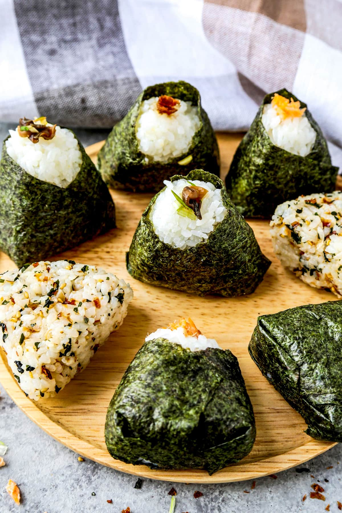

Spicy miso Salmon Onigiri recipe

If you want more delicious recipes, click here.
Description
Riceballs.. it's what is on the inside that counts
Ingredients
- Furikake Seasoning
- 2 Filets of Salmon
- Adobo Seasoning
- Soy Sauce
- Sesame oil
- Chili Oil
- Garlic powder
- Spicy Miso Gochujang
- Ground Ginger
- Short-grain Sushi rice
- Small sauce pan w/ lid
- Rice Vinegar
- Onigiri molds
- Dry seaweed wrap
- Honey
- Spatula
- Skillet or Saucepan. Won't be eaten but consider it necesarry to cook these items.
Salmon Preparation
- Dress up salmon fillets with adobo, soy sauce, and furikake.
- Heat saucepan with chili oil as lubricator
- Med heat, grill skin-side down. 7 Minutes.
- Med heat, cook tissue-side down. 5 minutes
- Use spatula to slice into the fillets. Cook until every piece of meat is chunked into a pool
- Add more furikake to taste, drizzle in sesame sauce.
- Gochujang spicy miso time. Don't drown it, but add enough for your ideal flavor presence. Top off our combination with honey.
- Set aside -- as we begin to work on our rice.
Rice Preparation
- Bring 1 1/4 of rice to a sauce pan. Wash until cleaning reps end with water that remains at least mostly clear. Good technique involves squishing grains together and pouring water once it becomes milky
- Fill sauce pan halfway with water
- High heat, boil for ten minutes
- Med heat, partially cover with lid or cover entirely with holed lid. Boil for another ten minutes
- Leave it to sit for an additional ten minutes
- Add spoonful of rice vinegar, soy sauce, and the smallest amount of honey for seasoning. Mix.
- Our rice is finished!
Finalizing our Onigiri
The last little stretch here.. yeesh.
- Your onigiri molds should be of two pieces. Take one and fill it with rice
- In the center, create something of an impression where your salmon filling will go
- Fill the other mold with rice
- Hold together for around 30 seconds
- Remove our onigiri from the molds
- Take a small, six-inch section from the seaweed sheet and wrap it around our riceball. I personally favor the sumo wrestler look but variantions are acceptable
- Make all the riceballs your resources allow! Leftover meat can be great for eggs, sandwiches, or salad protein.
- Enjoy!
If you want more delicious recipes, click here.